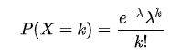

The Poisson distribution is a discrete probability distribution that describes the probability of an event happening for a given number of times within a certain interval of time or space under the following assumptions:
The Poisson distribution is characterized by a single parameter, denoted by λ (lambda), which is the mean or average number of occurrence of the in a fixed interval. The Poisson probability mass function for an event occurring k times is as follows:

where e is the mathematical constant e (approximately 2.71828), and k! denotes the factorial of k (i.e., the product of all positive integers up to k).